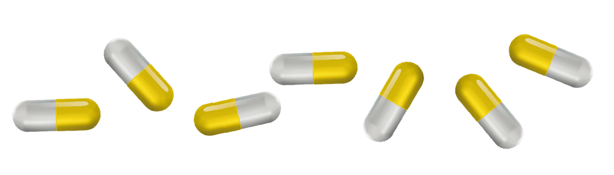
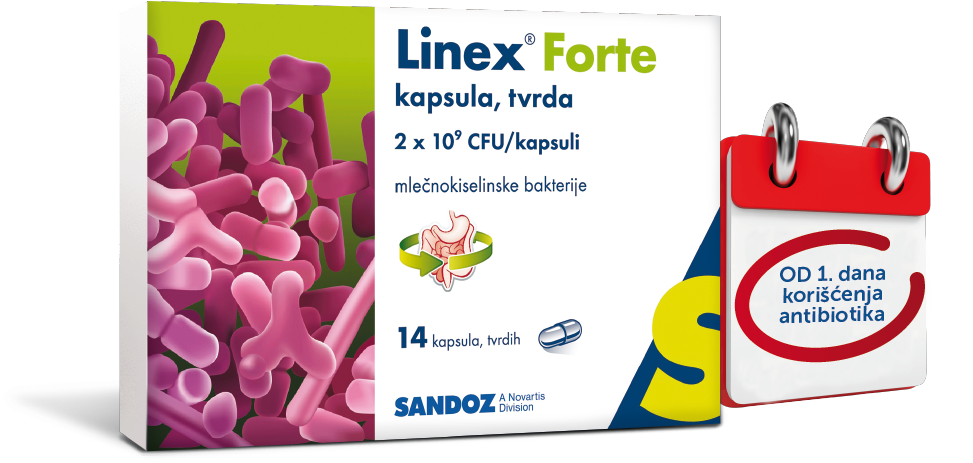

Mikrobiotu
čini više hiljada različitih mikroorganizama U i NA telu.
Da li ste znali
- da je sastav crevne mikrobiote jedinstven za svaku osobu, kao otisak prsta
- da njena težina može biti i do 2kg
- da svega 10% ljudskog tela čine humane ćelije, a čak 90% mikrobi
Poslednjih godina mnogo se govori o probioticima...
Znate li šta su oni zapravo?
Oni sadrže probiotske bakterije koje su jedni od stanovnika crevne mikrobiote. Njihova osnovna uloga je da kada se konzumiraju u adekvatnim količinama, uspostavljaju balans crevne mikrobiote.
Taj balans predstavlja smanjenje učestalosti i intenziteta digestivnih poremećaja naročito dijareje i nadimanja.
Samo uz kvalitetan i efikasan proizvod
možete postići željeni efekat!
Zbog toga je izuzetno važno:
- KOJI probiotski preparat koristite
- KOLIKO dugo ga koristite
- i u kojim DOZAMA
Sa 35 godina2 iskustva i prisustva na tržištu u više od 30 država širom Evrope i sveta3, svakodnevno pomažemo pacijentima u održavanju balansa crevne mikroflore.
Lekovi Linex® brenda-Linex®, Linex® Forte obuhvataju proizvode različitog sastava, jačine, doziranja i pakovanja, namenjenih kako odraslima, starijoj populaciji tako i najmlađima od prvih meseci njihovih života
PREDSTAVLJAMO VAM
Sadrži preko 100 puta više probiotskih bakterija od leka Linex®, koji je već 35 godina prisutan na tržištu Srbije.
Zahvaljujući tome:
- dozira se već od 1 kapsule dnevno, prema uputstvu za lek
- potvrđeno statusom registrovanog leka, na isteku roka trajanja ima najmanje 2 milijarde liofilizovanih bakterija u kapsuli
ZBOG ČEGA JE VAŽAN REGISTRACIONI STATUS PROIZVODA?
Da bi se probiotski preparati našli u prometu i prodavali, prema važećim propisima države Srbije, oni moraju biti registrovani kao lek ili dijetetski suplement.
- Status leka - neophodno je da proizvod ima obimnu registracionu dokumentaciju, koja potvrđuje:
- njegovu efikasnost
- propisani nivo kvaliteta
- bezbedonosni profil
Svaka uvezena serija leka pre puštanja u prodaju podleže kontroli nadležnih institucija.
- Status dijetetskog suplementa – propisi ne zahtevaju složenu registracionu dokumentaciju koja dokazuje efikasnost proizvoda, niti zahtevaju kontinuirano kontrolisanje pre i tokom puštanja u promet.
U procesu registracije leka mora biti dokumentovana stabilnost leka do isteka njegovog roka trajanja. To znači da probiotski lek tokom celog roka trajanja, pa i na samom isteku, ima najmanji broj bakterija koji je naveden u sastavu - za Linex® Forte (2 milijarde) je minimalni broj bakterija koji će pacijent uneti sa jednom kapsulom u svoj organizam, čak i ukoliko pije lek na samom isteku roka trajanja.

KOME je namenjen lek Linex® Forte?
Svim generacijama!
Mogu ga koristiti čak i odojčad!
KADA se koristi lek Linex® Forte?
On se može koristiti preventivno i kao potporna terapija u slučajevima dijareje, nadimanja i ostalih digestivnih poremećaja uzrokovanih:
- virusnim i bakterijskim infekcijama gastrointestinalnog trakta (npr. infekcija rotavirusom, putnička dijareja),
- terapijom antibioticima i/ili drugim sintetskim antimikrobnim supstancama
- terapijom zračenjem abdominalnih i karličnih organa
KAKO se koristi lek Linex® Forte?
Doziranje:
- Odojčad i deca mlađa od 2 godine: 1 kapsula 1 dnevno.
- Deca od navršene 2 godine do 12 godina: 1 kapsula 1 do 2 puta dnevno (u zavisnosti od težine simptoma)
- Deca od navršenih 12 godina i odrasli: 1 kapsula 1 do 3 puta dnevno (u zavisnosti od težine simptoma)
U slučaju dijareje kod dece mlađe od 6 godina, lečenje treba voditi pod lekarskim nadzorom.
- Bakterije u leku Linex® Forte su liofilizovane što znači da su osušene pri niskoj temperaturi i to omogućava nesmetano čuvanje leka Linex® Forte na sobnoj temperaturi.
- Preporučuje se uzimanje leka Linex® Forte sa obrokom, obzirom da se najbolji efekat postiže u prisustvu hrane.
- Kod dece i beba, pa i odraslih koji ne mogu ili ne znaju kako da progutaju, kapsulu treba otvoriti i sadržaj sipati u kašiku i pomešati sa malo vode.
- Kapsule ne treba uzimati istovremeno sa alkoholnim pićem ili vrućim napitkom.
- Lek se može uzimati sve dok se simptomi (dijareja, nadimanje...) ne poboljšaju.
- Ako dijareja traje duže od dva dana, pacijent treba da se posavetuje sa lekarom.
- U lečenju dijareje, veoma je važno nadoknaditi izgubljenu tečnost i elektrolite.
Za uspeh u borbi sa svakodnevnim izazovima,
VAŽNO JE OBEZBEDITI ZDRAVLJE I BALANS ORGANIZMA
Linex® Forte
ima mooooogo
dobrih bakterija
u samo jednoj kapsuli!
BALANS DOLAZI IZNUTRA!
Antibiotici i probiotici
Antibiotici Vam mogu pomoći da se brže izlečite od infekcija, a nekada Vam čak mogu i spasiti život i nezaobilazni su u modernoj medicini! Međutim, antibiotska terapija, pored svog terapijskog efekta može, zbog svog mehanizma delovanja, uticati i na našu crevnu mikrobiotu.
Da bi se antibiotska terapija učinila prijatnijom i lakšom za podnošenje, preporučuje se uzimanje probiotskog preparata kako bi se održao balans crevne mikrobiote tokom trajanja antibiotske terapije jer je on veoma važan za očuvanje zdravlja.
Linex® Forte kapsule uzimaju se najmanje 3 sata nakon uzimanja antibiotika.


Reference:
- Alims baza lekova, dec 2017.
- Linex prva registracija 1982.
- Lek Pharmaceuticals d.d. interni podaci
Pored leka Linex® Forte, u apotekama širom Srbije i dalje se prodaje i lek Linex®. Za više informacija o leku Linex® - njegovom sastavu, doziranju i načinu primene, proučite uputstvo za lek.